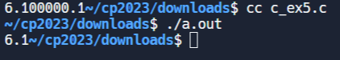
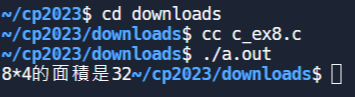

C_ex <<
Previous Next >> introduce to c
jsliu_c_programming
第一題:
#include<stdio.h>
void main()
{
printf("Hello World!");
}

第二題:
#include<stdio.h>
int main()
{
//變數宣告
int a;
int A;
int b,c;
a=1;
A=8;
b=2;
c=A-a+b;
printf("%d",c);
return 0;
}
第三題:
#include<stdio.h>
void main()
{
float a=0.5;
double b=1.2;
int c=3;
b=b+a+c;
//輸出a,b,c到螢幕
printf("a=%3.1f,b=%3.1f,c=%d",a,b,c);
}
第四題:
#include<stdio.h>
int main()
{
char x,y;
x='a';
y=(char)97;
printf("x=%c,y=%c,ASCII of y=%d",x,y,y);
return 0;
}
第五題:
#include<stdio.h>
int main()
{
int a,b;
float c;
a=b=5+1;
c=(float)a+0.1;
printf("%.1f",c);
}

第六題:
#include <stdio.h>
int main()
{
int a,b;
a=10;b=3;
printf("%d\n",a*b);
printf("%d\n",a/b);
printf("%d\n",a-b);
printf("%d\n",a%b);
return 0;
}
第七題:
#include <stdio.h>
int main()
{
int a=10,b=5;
printf("a==b is %d\n",a==b);
printf("a>b is %d\n",a>b);
printf("a<b is %d\n", a<b);
printf("a>=b is %d\n",a>=b);
printf("a<=b is %d\n",a<=b);
printf("a!=b is %d\n",a!=b);
printf("\n");
b=10;
printf("a==b is %d\n",a==b);
printf("a>b is %d\n",a>b);
printf("a<b is %d\n", a<b);
printf("a>=b is %d\n",a>=b);
printf("a<=b is %d\n",a<=b);
printf("a!=b is %d\n",a!=b);
return 0;
}
第八題:
#include<stdio.h>
int rect(int x,int y)
{
int result;
result=x*y;
return result;
}
void main()
{
int x=8,y=4;
int a;
a=rect(x,y);
printf("8*4的面積是%d",a);
}

第九題:
#include<stdio.h>
float circle(int r);
void main()
{
float answer;
answer=circle(8);
printf("圓周長度是%f",answer);
}
float circle(int r)
{
float result;
result=3.14159*2*r;
return (result);
}
第十題:
#include <stdio.h>
#include <conio.h>
int main()
{
char ch;
printf("input a char:");
scanf("%c", &ch);
if (ch == 'a')
{
printf("You pressed 'a'");
}
}
因replit無法使用conio.h標頭檔所以使用別的程式執行
C_ex <<
Previous Next >> introduce to c